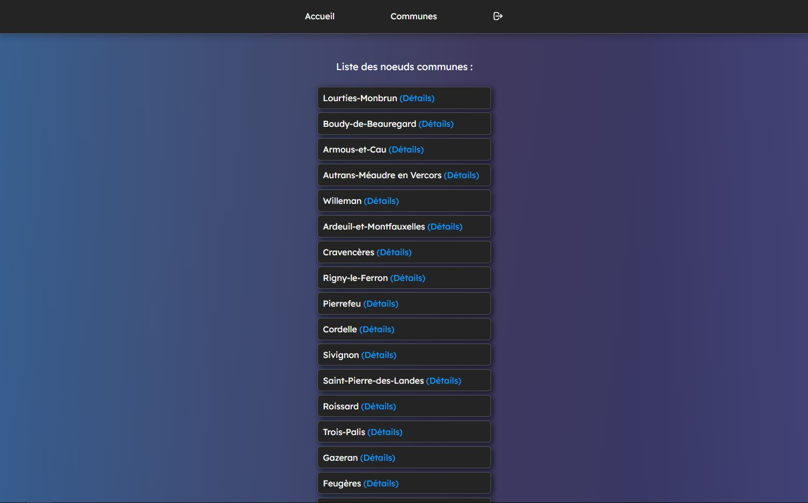

Olimap représente notre quête passionnée pour développer une application web capable de calculer la distance la plus courte entre deux communes françaises. Au cœur de cette réalisation se trouve l'algorithme de Dijkstra, adroitement employé pour analyser les données complexes des communes et routes françaises, représentées sous la forme d'un graphe.

Nous avons été confrontés à un obstacle majeur : le temps d'exécution. Initialement, notre application nécessitait plusieurs heures pour calculer de courtes distances, un défi qui menaçait sa fonctionnalité. Notre équipe s'est donc lancée dans une mission d'optimisation, visant à accélérer le calcul et à alléger la charge des données, tout en garantissant la fiabilité et la précision des résultats.
Une part significative de notre travail a été dédiée à l'amélioration de l'expérience utilisateur. J'ai pris l'initiative de transformer l'interface avec un design personnalisé en JavaScript, rendant l'application non seulement plus intuitive mais aussi visuellement attrayante. Parallèlement, nous avons renforcé la sécurité de l'application, en nous concentrant sur la protection des données utilisateur.
